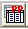
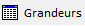
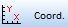

Terminale Générale
Spécialité Physique – Chimie
2020-2021
Act.2 Décrire le mouvement
Réaliser et/ou exploiter une vidéo ou une chronophotographie pour déterminer les coordonnées du vecteur position en fonction du temps et en déduire les coordonnées approchées ou les représentations des vecteurs vitesse et accélération.
Capacités expérimentales :
- Mettre en œuvre un dispositif d’acquisition et de traitement de données :
microcontrôleur, interface d’acquisition,tableur, langage de programmation - Collecter des données sur un mouvement (vidéo, chronophotographie, etc.).
Utilisation du matériel informatique :
Vérifier que l’ordinateur fonctionne bien.Tout problème doit-être signalé (chargeur manquant, touche abimée, fond d’écran inadéquat, etc…) et consigné dans le cahier. Chaque ordinateur à un n° de poste et fait partie d’un lot. Lorsque vous prenez un ordinateur, vous devez vous inscrire sur le cahier en précisant votre nom et prénom et le n° du poste.
1. Réaliser une vidéo
Conditions pour réaliser une vidéo : éclairage suffisant, la caméra doit être fixe, un étalon doit être présent pour pouvoir faire une exploitation de la vidéo.
Matériel :
- Caméra ou webcam
- Ordinateur
- Objet à étudier (balle)
Protocole :
- Réaliser une vidéo permettant une exploitation à l’ordinateur.
2. Exploiter une vidéo
2.1. Vecteur position
Dans un repère \( (O,\vec{i}, \vec{j}, \vec{k} \), la position d’un point G peut être déterminée par la connaissance du vecteur position \( \overrightarrow{OG} \).
Ce vecteur a pour caractéristiques : direction la droite \( (OG) \), le sens de O vers G, et la norme : la distance OG.
Le vecteur position varie en fonction du temps, on le note \( \overrightarrow{OG}(t) \). Les coordonnées de ce vecteur varient elles aussi en fonction du temps, le vecteur position peut donc s’écrire : \[ \overrightarrow{OG}(t)=x_{G}(t) \vec{i} + y_{G}(t) \vec{j} + z_{G}(t) \vec{k} \]
L’étalonnage préalable permettra d’obtenir les positions réelles. Ensuite un tableur (intégré ou non) permettra d’effectuer des calculs de modélisation pour obtenir les coordonnées du vecteur position en fonction du temps.
Dans la suite vous étudierez la trajectoire du point ……………. de la vidéo …………………. en plaçant l’origine des axes à la position …………………….
Le pointage :
- Ouvrir la vidéo dans le logiciel AVIMECA 2-7
- Adapter la taille du clip à l’écran

- Réaliser l’étalonnage de la vidéo en suivant
les consignes de la notice. - Placer un repère (O, Ox, Oy) en suivant les consignes.
- Réaliser le pointage de la trajectoire suivie par
le point étudié.

1) Décrire la trajectoire obtenue.
Exploitation du pointage :
- Utiliser l'icône  ou bien aller dans Fichiers→Copier dans le presse-papier→ Le tableau
- Ne rien écrire et cliquer "OK".
- Lancer le tableur REGRESSI
- Dans la fenêtre Grandeur  et l’onglet Tableau les données pointées dans AVIMECA.
- Dans la fenêtre Graphe, cliquer sur l’icône Coord.  pour afficher \(x(t) \) et \( y(t) \).
- Sur le coté gauche de la fenêtre cliquer sur Modélisation puis sur modèle.
- Choisir la modélisation qui vous convient pour \(x(t) \) et cliquer Ajuster.
- Faire la même chose pour \(y(t)\).
2) Donner les coordonnées \(x(t)\) et \(y(t)\) du vecteur position \( \overrightarrow{OG}(t)\) en fonction du temps t.
2.2. coordonnées approchées du vecteur vitesse
Le vecteur position est \(\overrightarrow{OG}(M)\) lorsque \(G\) est en \(M\) et \(\overrightarrow{OG}(M')\) lorsque \(G\) est en \(M'\).
On a donc \(\overrightarrow{OG}(M')=\overrightarrow{OG}(M)+ \overrightarrow{MM'} \) avec \(\overrightarrow{MM'}\) le vecteur déplacement. Si \(M\) et \(M'\) sont proches, la durée \(\Delta t\) est "petite". On peut alors calculer le vecteur vitesse approchée : \[ \vec{v}=\frac{\overrightarrow{MM'}}{\Delta t} \] En utilisant les coordonnées \( (x_M, y_M) \) de \(M\) et \( (x_M', y_M') \) de \(M'\) on a : \[ \vec{v}= \left ( \begin{eqnarray} \frac{x_{M'}-x_{M}}{\Delta t} \\ \frac{y_{M'}-y_{M}}{\Delta t} \\ \end{eqnarray} \right ) \]
Calculs des coordonnées approchées du vecteur itesse :
Dans le logiciel REGRESSI :
- Dans la fenêtre Grandeurs et l’onglet Expressions créer une nouvelle grandeur à la ligne : vx=(x[i+1]-x[i])/t
- Faire la même chose pour la grandeur vy
- Sélectionner Tableau, les nouvelles grandeurs ont été ajoutées.
3) Afficher les représentations de \(v_x (t) \) et \(v_y (t) \).
4) Modéliser les deux grandeurs précédentes. Appeler le professeur pour valider.
2.3. coordonnées approchées du vecteur vitesse
Le vecteur vitesse approchée s’écrit : \[ \vec{v}= \left ( \begin{eqnarray} v_x \\ v_y \\ \end{eqnarray} \right ) \] Le vecteur accélération approchée s’écrit :
\[ \vec{a}= \left( \begin{array}{c} a_x \\ a_y \end{array} \right )= \left(\begin{array}{c} \frac{v_{xM'}-v_{xM}}{\Delta t} \\ \frac{v_{yM'}-v_{yM}}{\Delta t} \end{array}\right ) \]
Dans le logiciel REGRESSI :
- Dans la fenêtre Grandeurs et l’onglet Expressions créer une nouvelle grandeur à la ligne : ax
- Faire la même chose pour la grandeur ay.
5) Afficher les représentations de $ a_x (t) $ et $ a_y (t) $.
6) Modéliser les deux grandeurs précédentes. Appeler le professeur pour valider.